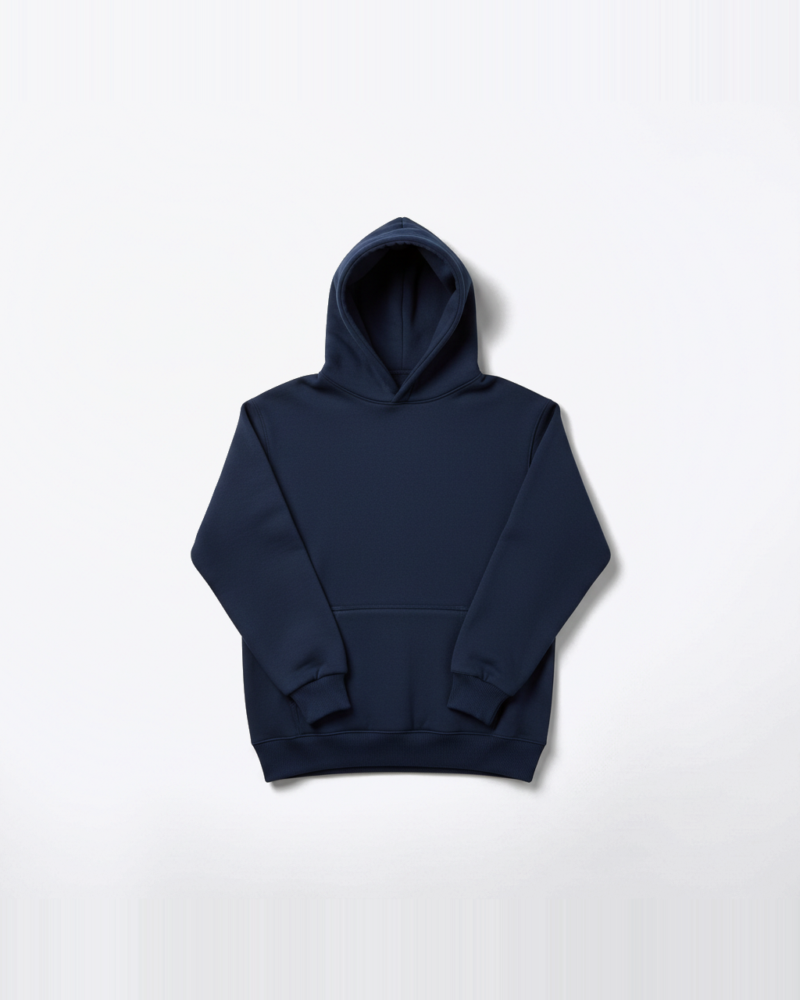

Day 5
Live in five working days, on your own subdomain.

music-club.themerchhq.in
Hostel Night 2026
From ₹899
At close
At close it’s a table, not a thread of corrections.
Paid to The Merch HQ by UPI, not to an individual’s account.
Merch, handled.
themerchhq.in